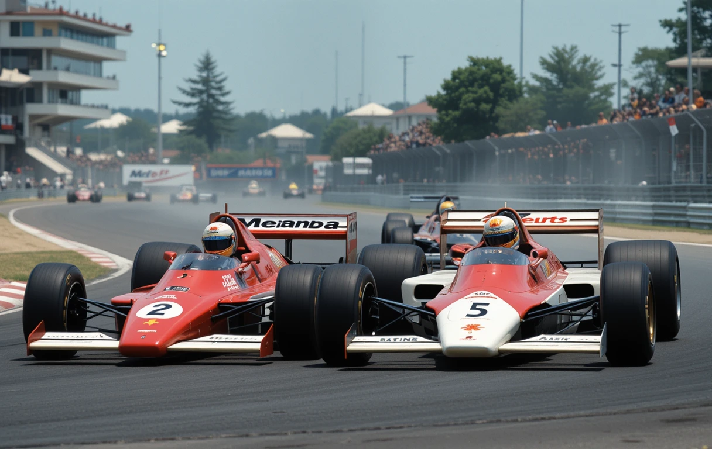

historias dentro de la fórmula 1
senna vs prost
senna vs prost
Ayrton Senna y Alain Prost protagonizaron una de las rivalidades más intensas en la historia de la Fórmula 1. Compitieron ferozmente entre finales de los 80 y principios de los 90, especialmente cuando fueron compañeros en McLaren (1988-1989). Su lucha incluyó choques polémicos, tensiones dentro del equipo y acusaciones mutuas, pero también respeto como pilotos de élite. Su rivalidad definió una era de la F1.